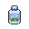
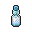
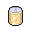
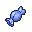
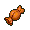
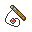

En bref.
Personnage sur l'avatar : Otabek Altin de Yuri on Ice!!!.
Hello ! Moi, c'est Kaktus.
Après avoir obtenu 5 rubans lors de différents concours de coordination et être sorti victorieux de mon tout premier défi face aux incroyables maîtres coordinateurs qui forment l'Élite, je me suis lancé dans une incroyable aventure : l'élevage. Alors que je devais initialement reprendre la pension familiale, j'ai finalent pris la décision d'ouvrir ma propre pension. C'est grâce à un financement de Nessa Finnegan que l'incroyable Kokonut's Pension a pu sortir de terre au coeur de L'Île Noadkoko. C'est ainsi, qu'à l'âge de seulement 23 ans, je suis devenu éleveur dans la région d'Alola, laissant derrière moi ma région natale : Kalos.
Il semblerait que le thème général me correspondant le mieux, d'après Tony Schwärtzwind, soit celui-ci. Je ne sais pas trop ce que je dois en comprendre, mais j'apprécie beaucoup le dosage des basses et les paroles de la chanson. Dans le fond, je me dis que c'est plutôt proche de ce que je pense, alors pourquoi pas.
Les badges
Kalos 


.png)


Sinnoh 


Alola 


Utilisation des CS
Surf › illimité
Cascade › 17.01.20
Coupe › 06.09.19
Force › 07.01.20
Éclate-roc › 22.09.20
Anti-brûme › 20.05.19
Vol › 27.12.2018
Banque
08.11.20 ›
71233 p$
Utilisation des Flûtes
Pokéflûte N. › xx.xx.20
Pokéflûte V. › xx.xx.20
Pokéflûte R. › xx.xx.20
 13› Poké Ball
13› Poké Ball 20› Super Ball
20› Super Ball 18› Hyper Ball
18› Hyper Ball 06› Faiblo Ball
06› Faiblo Ball 07› Bis Ball
07› Bis Ball 02› Scuba Ball
02› Scuba Ball 01› Honor Ball
01› Honor Ball 01› Master Ball
01› Master Ball 19› Potion
19› Potion 13› Super Potion
13› Super Potion 07› Hyper Potion
07› Hyper Potion 05› Potion Max
05› Potion Max 05› Guérison
05› Guérison05› Eau Fraîche
04› Soda Cool
05› Limonade
 10› Lait Meumeu
10› Lait Meumeu 10› Rappel
10› Rappel 05› Rappel Max
05› Rappel Max 06› Total Soin
06› Total Soin 11› Anti-Para
11› Anti-Para 10› Antidote
10› Antidote 10› Anti-Gel
10› Anti-Gel 10› Anti-Brûle
10› Anti-Brûle 11› Réveil
11› Réveil 01› Pass Almia
01› Pass Almia03› Superbonbon
01› Superbonbon Halloween
01› Canne
 01› Super-Canne
01› Super-Canne 01› Méga-Canne
01› Méga-Canne 01› Pokéflûte
01› Pokéflûte 01› Pokéflûte bleue
01› Pokéflûte bleue 01› Pokéflûte rouge
01› Pokéflûte rouge 01› Pokéflûte noire
01› Pokéflûte noire 01› Pokéflûte violette
01› Pokéflûte violetteRP› Photo de promotion du Pikachu cosplayeur
 01› Pierre Eau
01› Pierre Eau 02› Pierre Plante
02› Pierre Plante 01› Pierre Foudre
01› Pierre Foudre 01› Pierre Soleil
01› Pierre Soleil 01› Pierre Lune
01› Pierre Lune 01› Pierre Stase
01› Pierre Stase01› CS02 - Vol
01› CS03 - Surf
01› CS04 - Force
01› CS05 - Anti-Brûme
01› CS06 - Éclate-Roc
01› CS07 - Cascade
01› CT02 - Coupe-Vent
01› CT29 - Psyko
01› CT30 - Téléport
01› CT34 - Patience
02› CT35 - Métronome
01› CT43 - Piqué
01› CT44 - Repos
01› CT59 - Puissance Caché
01› CT61 - Doux Parfum
01› CT62 - Ronflement
02› CT66 - Giga-Sangsue
02› CT72 - Ball'Ombre
01› CT86 - Taillade
01› CT98 - Casse Brique
 01› CT100 - Tomberoche
01› CT100 - Tomberoche01› CT108 - Atterissage
01› CT110 - Éco-Sphère
01› CT116 - Vampipoing
01› CT131 - Séduction
01› CT138 - Picore
01› CT141 - Distorsion
01› CT153 - Ébullition
02› CT154 - Chute Libre
01› CT160 - Souffle Glacé
01› CT173 - Siphon
01› CT204 - Pics Toxik
01› CT275 - Trépignement
 06› Baie Ceriz
06› Baie Ceriz 07› Baie Maron
07› Baie Maron 08› Baie Pecha
08› Baie Pecha 06› Baie Fraive
06› Baie Fraive 06› Baie Willia
06› Baie Willia 09› Baie Sitrus
09› Baie Sitrus 01› Baie Prine
01› Baie Prine 01› Baie Mangou
01› Baie Mangou 01› Baie Rabuta
01› Baie Rabuta 02› Baie Tronci
02› Baie Tronci 01› Baie Kiwan
01› Baie Kiwan 01› Baie Charti
01› Baie Charti 01› Pommes d'Or
01› Pommes d'Or 00› Miel
00› Miel› 5 Poké Balls (Début de l'aventure)
› 2 Potions (Début de l'aventure)
06/07/16
› 1 Superbonbon (Concours FDM 2016)
29/09/16
› 1 CS Surf (C.E.I.R)
› 1 CS Éclate-Roc (C.E.I.R)
10/11/16
› 1 CT Taillade (Foire aux CT #23)
13/11/16
› 2 Superbonbons (Concours Halloween 2016)
08/02/17
› 2 CT Danse Pluie (C.E.I.R.)
17/12/17
› 2 Superbonbons (Concours avatars PNJ)
27/12/16
› 5 Superbonbons (Kôpin de Noël)
03/01/17
› 2 Total Soins (Calendrier 2017 J02)
04/01/17
› 1 Rappel (Calendrier 2017 J03)
05/01/17
› 2 Hyper Potions (Calendrier 2017 J04)
06/01/17
› 1 CT Éclair Fou (Calendrier 2017 J05)
09/01/17
› 1 Pierre Eau (Calendrier 2017 J08)
11/01/17
› 1 Kit d'anti-statuts (Calendrier 2017 J10)
12/01/17
› 1 Assortiment de Baies (Calendrier 2017 J11)
13/01/17
› 1 GM (Calendrier 2017 J12)
14/01/17
› 1 Pokéflûte (Calendrier 2017 J13)
15/01/17
› 1 PV Plus (Calendrier 2017 J14)
16/01/17
› 1 Kit de Capture (Calendrier 2017 J15)
18/01/17
› 1 Kit d'anti-statuts (Calendrier 2017 J17)
19/01/17
› 1 CT Blabla Dodo (Calendrier 2017 J18)
20/01/17
› 2 Hyper Balls (Calendrier 2017 J19)
21/01/17
› 1 Honor Ball (Calendrier 2017 J20)
23/01/17
› 1 GM (Calendrier 2017 J22)
24/01/17
› 1 Lait Meumeu (Calendrier 2017 J23)
26/01/17
› 1 Superbonbon (Calendrier 2017 J25)
27/01/17
› 1 CT Lance-Flamme (Calendrier 2017 J26)
28/01/17
› 3 Super Potions (Calendrier 2017 J27)
31/01/17
› 1 Carbone (Calendrier 2017 J30)
01/02/17
› 2 Superbonbons (Calendrier 2017 J31)
09/03/17
› 1 GM (Sales)
26/04/17
› 1 CT Météores (Concours 9 ans)
08/05/17
› 1 CT Métronome (Foire aux CT #29)
09/05/17
› 1 Pass Almia (C.E.I.R.)
› 1 CT Clonage (C.E.I.R.)
01/06/20
› 1 Lot de Baies (Tombola mai 2017)
25/08/17
› 1 CT Noeud Herbe (Enchères)
31/08/17
› 1 Kit de Survie (Tombola août 2017)
03/09/17
› 1 CT À la Queue (Foire aux CT #33)
› 1 CT Chant Canon (Foire aux CT #33)
09/09/17
› 1 CT Picore (Foire aux CT #33)
10/09/17
› 1 CT Ébullition (Tombola Rentrée 2017)
› 1 CT Vibraqua (Tombola Rentrée 2017)
› 1 GM (Tombola Rentrée 2017)
30/11/17
› 1 CT Giga-Sangsue (Enchères)
26/12/17
› 1 CT Repos (Sapin de Noël)
07/01/18
› 1 Calcium (Calendrier 2018 J06)
08/01/18
› 1 CS Anti-Brûme (C.E.I.R.)
09/01/18
› 1 CT Souffle Glacé (Calendrier 2018 J07)
› 1 Kit de Survie (Calendrier 2018 J08)
11/01/18
› 2 Lait Meumeu (Calendrier 2018 J10)
16/01/18
› 1 CS Cascade (Calendrier 2018 J15)
17/01/18
› 1 GM (Calendrier 2018 J16)
19/01/18
› 2 Guérisons (Calendrier 2018 J18)
20/01/18
› 2 Hyper Balls (Calendrier 2018 J19)
23/01/18
› 1 CT Noeud Herbe (Enchères)
25/01/18
› 1 Total Soin (Calendrier 2018 J24)
26/01/18
› 1 Pierre Stase (Calendrier 2018 J25)
29/01/18
› 1 Kit de Survie (Calendrier 2018 J28)
30/01/18
› 1 Calcium (Calendrier 2018 J29)
05/02/18
› 1 CT Larcin (Foire aux CT #38)
07/02/18
› 1 CT Blabla Dodo (Foire aux CT #38)
28/02/18
› 1 Pass Almia (Loterie 10 ans)
24/04/18
› 1 CT Ébullition (Concours 10 ans)
25/04/18
› 1 CT Distorsion (Foire aux CT #40)
07/05/18
› 1 Pierre Stase (C.E.I.R.)
› 1 Pierre Eau (C.E.I.R.)
15/05/18
› 1 PV Plus (C.E.I.R.)
07/07/18
› 1 Pierre Eau (Concours FDM 2018)
› 1 Pierre Plante (Concours FDM 2018)
› 1 Pokéflûte Rouge (Concours FDM 2018)
03/09/18
› 1 Méga Canne (Sales)
09/10/18
› 1 CT Poing de Feu (Foire aux CT #46)
21/11/18
› 1 GM (Concours Halloween 2018)
› 2 Superbonbons (Concours Halloween 2018)
26/12/18
› 5 Superbonbons (Tombola des Fêtes)
03/01/19
› 1 Guérison (Calendrier 2019 J02)
04/01/19
› 1 Pokéflûte Bleue (Calendrier 2019 J03)
07/01/19
› 1 CT Laser Glace (Calendrier 2019 J06)
08/01/19
› 1 Lait Meumeu (Calendrier 2019 J07)
09/01/19
› 1 CT Tonnerre (C.E.I.R.)
› 1 Kit Fraîcheur (Calendrier 2019 J08)
10/01/19
› 1 PV Plus (Calendrier 2019 J09)
12/01/19
› 1 CT Danse Pluie (Calendrier 2019 J11)
18/01/19
› 2 Baies Kiwan (Calendrier 2019 J17)
20/01/19
› 1 Zinc (Calendrier 2019 J19)
21/01/19
› 1 Assortiment de Baies (Calendrier 2019 J20)
22/01/19
› 1 Réveil (Calendrier 2019 J21)
23/01/19
› 1 Hyper Ball (Calendrier 2019 J20)
25/01/19
› 1 Superbonbon (Calendrier 2019 J24)
26/01/19
› 1 Superbonbon (C.E.I.R.)
27/01/19
› 2 Rappel Max (Calendrier 2019 J26)
31/01/19
› 1 Canne (Calendrier 2019 J30)
03/02/19
› 1 CT Téléport (Foire aux CT #50)
16/04/19
› 1 Pass Almia (Concours 11 ans)
› 2 GM (Concours 11 ans)
› 1 CT Piqué (Concours 11 ans)
08/05/19
› 1 Pierre Foudre (C.E.I.R.)
22/09/19
› 1 Assortiment de Vitamines (Loterie Festive)
14/11/19
› 1 CT Ball'Ombre (Concours Halloween 2019)
› 1 CT Psyko (Concours Halloween 2019)
› 1 Pokéflûte Violette (Concours Halloween 2019)
› 2 Superbonbons (Concours Halloween 2019)
01/12/19
› 1 CT Vampipoing (Concours Challenge Card)
26/12/20
› 1 Sérum S (Tombola des fêtes 2019)
28/12/19
› 1 CT Doux Parfum (Foire aux CT #59)
03/01/20
› 1 Faiblo Ball (Calendrier 2020 J02)
04/01/20
› 1 Lait Meumeu (Calendrier 2020 J03)
› 2 Baies Siam (Calendrier 2020 J03)
05/01/20
› 1 Superbonbon (Calendrier 2020 J04)
06/01/20
› 1 Limonade (Calendrier 2020 J05)
07/01/20
› 1 Eau Fraîche (Calendrier 2020 J06)
09/01/20
› 2 Scuba Balls (Calendrier 2020 J08)
10/01/20
› 1 Bis Ball (Calendrier 2020 J09)
12/01/20
› 1 Canne (Calendrier 2020 J11)
15/01/20
› 1 Anti-Brûle (Calendrier 2020 J14)
18/01/20
› 1 Miel (Calendrier 2020 J17)
21/01/20
› 1 Hyperball (Calendrier 2020 J20)
30/01/20
› 1 Pomme d'Or (Calendrier 2020 J29)
03/02/20
› 1 Pomme d'Or (C.E.I.R.)
21/04/20
› 1 Sérum S (Loterie 12 ans)
12/05/20
› 1 CT Pics Toxik (Foire aux CT #65)
24/05/20
› 1 CT Tomberoche (C.E.I.R.)
› 1 CT Coupe-Vent (C.E.I.R.)
› 1 CT Séduction (C.E.I.R.)
› 1 CT Ronflement (C.E.I.R.)
06/10/20
› 1 CT Trépignement (Foire aux CT #70)
19/10/20
› 1 Masterball (Sales)
xx/xx
› Q objet (motif)
xx/xx
› Q objet (motif)
xx/xx
› Q objet (motif)
xx/xx
› Q objet (motif)
xx/xx
› Q objet (motif)
xx/xx
› Q objet (motif)
xx/xx
› Q objet (motif)
xx/xx
› Q objet (motif)
› 1 Superbonbon (C.E.I.R)
14/01/17
› 1 CT Éclair Fou (C.E.I.R.)
25/01/17
› 2 Super Potions (C.E.I.R.)
09/05/17
› 1 CT Lance-Flamme (C.E.I.R.)
› 3 Superbonbons (C.E.I.R.)
23/05/17
› 1 CT Nitrocharge (Enchères)
03/09/17
› 1 CS Coupe (C.E.I.R.)
06/09/17
› 3 Superbonbons (C.E.I.R.)
12/10/17
› 1 CT Abîme (Enchère)
27/12/17
› 1 CT Danse Pluie (Sapin de Noel)
› 2 Superbonbons (Sapin de Noel)
› 1 Poké Ball (Sapin de Noel)
› 2 Super Balls (Sapin de Noel)
› 3 Hyper Balls (Sapin de Noel)
› 2 Antidotes (Sapin de Noel)
08/01/18
› 1 CT Tonnerre (C.E.I.R.)
13/01/18
› 1 CS Surf (C.E.I.R.)
16/01/18
› 3 Superbonbons (C.E.I.R.)
15/03/18
› 3 Superbonbons (Enchères)
06/05/18
› 1 CT Nitrocharge (C.E.I.R.)
07/05/18
› 1 CT Éclat Magique (C.E.I.R.)
15/05/18
› 1 CS Vol (C.E.I.R.)
05/09/18
› 1 CT Centrifugifle (C.E.I.R.)
30/12/18
› 1 Pierre Eau (Kaktus de Noël)
09/01/19
› 1 CT Éco-Sphère (C.E.I.R.)
08/05/19
› 1 Pierre Lune (C.E.I.R.)
› 1 CT Chant Canon (C.E.I.R.)
› 1 CS Surf (C.E.I.R.)
› 3 GM (C.E.I.R.)
› 10 Superballs (C.E.I.R.)
02/01/20
› 1 Assortiment de Vitamines (Sapin Bleu de Noël)
› 5 Guérisons (Sapin Bleu de Noël)
› 3 Potions Max (Sapin Bleu de Noël)
› 2 Rappels (Sapin Bleu de Noël)
› 2 Rappels Max (Sapin Bleu de Noël)
› 5 Total Soins (Sapin Bleu de Noël)
› 1 CT Ball'Ombre (Sapin Bleu de Noël)
› 1 CT Vampipoing (Sapin Bleu de Noël)
› 1 CT Blabla Dodo (Sapin Bleu de Noël)
› 1 CT Rune Protect (Sapin Bleu de Noël)
› 1 CT À la Queue (Sapin Bleu de Noël)
› 1 CT Larcin (Sapin Bleu de Noël)
01/02/20
› 2 Superbonbons (C.E.I.R.)
24/05/20
› 2 Superbonbons (C.E.I.R.)
xx/xx
› Q objet (motif)
xx/xx
› Q objet (motif)
xx/xx
› Q objet (motif)
xx/xx
› Q objet (motif)
xx/xx
› Q objet (motif)
xx/xx
› Q objet (motif)
# 2› Septembre. 2016
# 3› Janvier. 2017
# 4› Mai. 2017
# 5› Septembre. 2017
# 6› Janvier. 2018
# 7› Mai. 2018
# 8› Septembre. 2018
# 9› Janvier. 2019
# 10› Mai. 2019
# 11› Septembre. 2019
# 12› Janvier. 2020
# 13› Mai. 2020
# 14› Septembre. 2020
# 15› mois. année


{kind=link}
{kind=link}
{kind=link}
{kind=link}
{kind=link}
{kind=link}